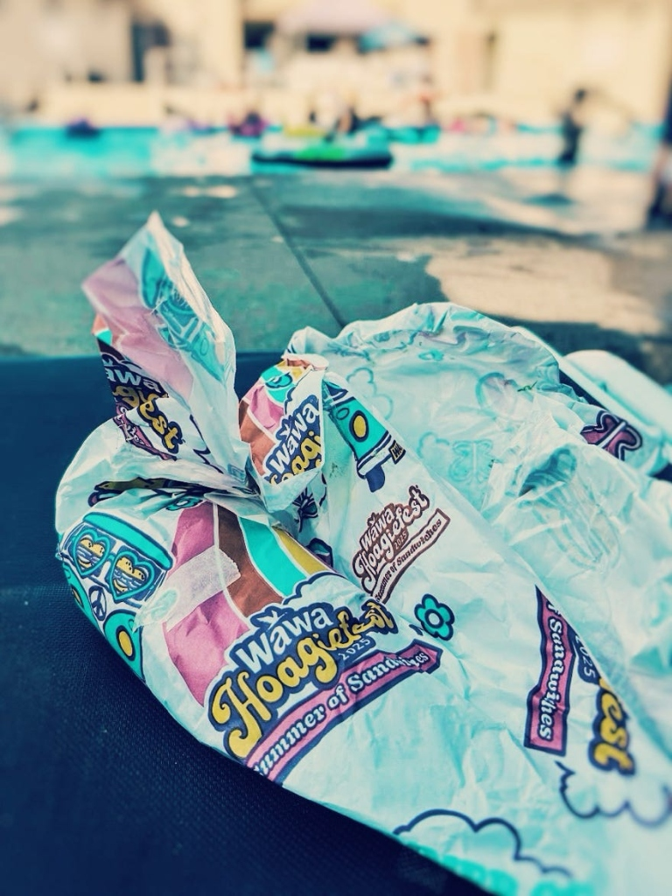

Happy August!
Last summer, my wife started working at our town’s public pool in order to escape the chaotic house (but mainly to get our family a free membership). By the end of her first week, it was clear that the goings-on there—the absurd comedy of member behavior in a service industry, the employee inside jokes, the tireless manager’s constant fear of baby pool defecation—would constitute a show to rival Parks and Rec.
I began debriefing my wife weekly to compile those stories for a book that could capture the joy, cringe, and heart of a community institution that has been in our town for nearly a century (big party coming in 2027). This summer I committed to ignoring my central project—a kidlit book outline about our RV America Tour—to write three vignettes in what might be my first (halting attempt) at an adult novel.
Below is the first installment, heavily edited, though no doubt filled with typos (meaning: no need to email me about them). Two more will follow, one per Friday in the month of August.
I hope you laugh and feel some nostalgia; but also that you remember this is fiction. Any correlation between reality—names, places, etc—are of course incidental and “from the author’s imagination” as the publishing industry legal department likes to say. Meaning: I made it up. Some of it.
Enjoy!
1 - Hoagiefest
Disclaimer: This is a work of fiction. Any resemblance to people or places in real life is coincidental, even if those people share identical physical and/or personality features and the places have the exact same names. Don’t overthink it.

“You want me to starve,” the guy said. “That’s what you’re saying—you want me to go hungry. You want me and my kids to go hungry.”
“No sir,” Dave said calmly. Always be calm. His motto, one he taught every swim instructor, guard, student manager, and adult who put on the Fanny Chapman Swim Club employee shirt. Always. Be. Calm. This summer, that mantra was more critical than anyone knew, save himself and the town’s governing board. “I just need you to eat your hoagie outside of the pool area.”
Alan, who was conducting this conversation from a semi-reclined chair in the coveted tree-shaded second row behind the main pool, stared.
“Why would I want ten hoagies?”
“A figure of speech.”
“You saying I’m fat?”
He was, in fact, overweight. “No, sir.”
“Who eats ten hoagies?”
Always be calm. “Sir, the issue isn’t even the food. It’s the bees.”
A piece of thinly shredded hoagie lettuce hung from Alan’s lips. Dave wondered if a person—Alan, say—could choke on such a thing. “The what?”
Dave pointed to a trashcan, one of only two on the pool deck—a purposeful move to keep people from bringing in meal containers. “Do you see any bees?”
Alan squinted. He was about six feet tall with one of those power guts of thick slab that didn’t wiggle as he moved. Not obese, but waddling in the right direction. “Maybe one.”
“Exactly. That’s because we don’t allow food, as stipulated in the general pool membership rules, which you signed. That hoagie wrapper and any leftover food will attract bees, which many members are allergic to.”
“I didn’t sign a thing.”
“Sir,” Dave said, in a tone that was starting to sound very not calm, potentially borderline irate, “if you’re a member, then you did sign a code of conduct waiver, agreeing to abide by the general rules.”
Alan took another bite. “That piece of paper is worthless. I’m a lawyer—I’d know.”
Always be calm. “Sir, I’m going to have to ask you to leave the pool complex and enjoy your lunch somewhere else.”
“It’s Hoagiefest—did you know that? All month.”
“Yes, sir, I’m aware.” A summer promotion run by Wawa, a convenience store chain which Southeastern PA residents loved more than church, though not quite as much as the Eagles or booing out-of-town players. “But it’s still against the rules. You need to—”
“Hey, Dave,” squawked his walkie. Aiden, top student manager and reliable number three, currently manning the main desk. “A lady just came in and said Old Faithful was overflowing.”
“Not possible,” he shot back. Staying calm could be difficult with employees, primarily because they wouldn’t use their power guts to go over his head to the board of directors and lob complaints. A board, Dave clarified to his wife at least once a day, that had hired him without disclosing the mismanagement of the previous managers. “I had the plumber clear that line yesterday.”
And might have to fire a guard to pay for it, he thought. No. Not doing the mental math now.
“She says there’s…stuff…all over the floor,” Aiden clarified.
Dave stood to get eyes on the lady, currently leaning on the high-top counter in the front office breezeway, relaying this to Aiden. Molly. Mother of three. Cheerful, kind, never complained. Meaning: reliable.
“Okay—have Max close the bathroom.”
“He’s on break.”
“Where’s Kate?”
“She doesn’t come until three.”
Dave checked his watch: 2:32 p.m.
“Sewage.” Alan burped, then helped himself to another bite. “Not good.”
Dave saw himself doing the not-calm thing: stuffing the rest of the hoagie down Alan’s prediabetic throat. Nobody was rooting for full asphyxiation, but approaching; enough for him to taste—yes, there it was—some justice.
Always be calm.
More like direct: a lawsuit would shut us down tomorrow, being that we’re one pump failure from bankruptcy, thanks to years of shoddy management by someone other than me.
Dave surrendered the hoagie battle. “Have a good day, sir.”
“Oh, I will—I’m eatin’ a hoagie.”
Racing around the Main Pool, Dave texted the plumber. A veteran multitasker, avoiding the mental math was impossible despite its tragic implications. Yesterday’s line flush had cost $1,200, an expensive “hydro jetting” that he’d hoped would clear the pipe for good. A waste of money—down the toilet, as it were. Today’s estimate would no doubt be worse.
Grabbing a massive orange cone from a poolside storage box, Dave banged on the Women’s door. “Hello—hello. Everyone out, please. The bathroom must be closed for maintenance.”
He could smell it already—the stuff.
“We have three porta potties by the Dolphin Pool,” he called in, being careful not to actually look in the bathroom—last thing they needed was that kind of suit. Alan was probably filming this from his recliner. “Again, please exit the bathroom immediately.”
He stepped back and inhaled clean air, his last for a while. Always be calm. Two moms ducked out, holding babies, trailed by screaming toddlers.
“Thank you. Apologies.” Dave smiled, though it was more of a squinting-into-the-sun grimace. He banged on the open door one more time. “Male entering!”
Silence.
Into the great unknown.
Not quite accurate: Dave had spent more time inside a women’s restroom than was normally recommended or advised by legal counsel. It was here that he and the master plumber first diagnosed Old Faithful, the fifth toilet along the back wall. Despite constant stopgap fixes, it just loved to overflow. More confusing, it seemed to unload…stuff…from stalls further up the line. Meaning: the entire system had a massive clog.
“Hello!” Dave called out again, just in case he was one day asked, on the stand, Yes, but sir, did you make your presence known? “Management has closed this bathroom, as we attempt to fix the toilet.”
No answer. All clear.
Except for Old Faithful, who was nearing the end of an eruption. Dave knew her moods; she was done, but so was the damage. At least two days closed. The county health inspector was an incredibly level-headed woman that Dave knew well, but even she had her limits.
“I’m sorry,” a voice behind him said.
Not a male one.
“Hey—hey.” Molly, mother of three.
“We closed the bathrooms,” Dave reminded her. “There’s some porta potties—”
“It was me.” She put a hand over her mouth—genuine sorrow, mixed with some shame and the beginnings of an embarrassed smirk. “I clogged it.”
“Oh. Okay.” Dave reached out to comfort her. Danger, Will Robinson. He pulled back. “This toilet has been a problem since we opened this season—before, actually, is what the guards tell me. I’m sure—”
“It was a hoagie,” Molly confessed. There was some serious distress on her face. “I’m so sorry.”
Alan would have something to say about this. Dave had a few questions himself, one out of curiosity. “Food poisoning?”
“I’m so embarrassed—you don’t even know.”
Kate appeared in the changing area; early as usual, thank God. “Mop buckets?”
“Two,” Dave answered.
“Carly and Joanne,” Kate radioed. “Can you bring two mops to the women’s bathroom? I know you’re off at three, but I’ll double your break tomorrow.”
Of the many skills needed as an adult manager was telling teenagers what to do in a way that wouldn’t immediately piss them off. In other words, bribery. A mom of four herself, Kate had a Ph.D. in the field.
“It’s Hoagiefest, so I got a couple, for the kids to eat—outside of course,” Molly was saying, rambling at this point. No, running. Diarrhea of the mouth. Hard to stop the puns once things got moving. “It was in my pool bag, which was in the stall with me, and as I was leaving, one fell in the toilet. It must’ve rolled out of the wrapper.”
“I see.” That would explain the undigested piece of lettuce floating by Dave’s open-toed sandal. He moved his foot out of the oncoming stream. “Things happen. We’ll figure it out.”
“Mama—mama?” a child yelled into the bathroom. Two appeared, then a third. Molly’s daughters.
“I’d just flushed, so it went down with—Oh, Dave, I’m so embarrassed.”
Molly was crying now. He imagined his own wife in such a situation, Hoagie and all. Not much choice, really. Lawsuits be damned.
Dave put an arm around her, even though this put his open-toed sandals back in the line of incoming bilge. “It’s gonna be okay. Really.”
“It’s not.” She was sobbing hard now, really letting it all out. A cleanse. “Oh God, it really isn’t. I’m pregnant.”
“You’re—”
“Mommy’s pregnant!” her oldest shrieked with joy. “Mama’s pregnant!”
“You’re gonna have a baby?” the younger ones asked in unison.
“Yes—yes,” Molly whimpered, pulling them into a family hug. “We’re having another baby.”
“Not we,” Dave heard himself say as Carly and Joanna appeared, mops and buckets at the ready, confusion on their faces. “But—congrats. That’s amazing Molly. Really. I mean, wow.”
“No,” she whispered, yanking him closer despite his attempt to extricate. “It’s a nightmare. Jeff…he doesn’t even know yet.”
Later that night, after closing, when the humidity had reached tolerable and the master plumber had delivered a near-fatal estimate to dig a new line; when Dave had submitted said estimate to the town council; when his wife had texted How was today? and he’d typed a long reply recounting the horrors, then deleted it all and inserted a poop emoji; when he’d locked the entryway door and hiked to his car in the overflow lot where he always parked so the guards didn’t have to; it was then that Dave remembered he hadn’t eaten since breakfast. It was an open question if he’d ever be hungry again, considering all that he’d witnessed.
But driving home, his gas tank light dinged orange, and being in Southeast PA, he was not far from a Wawa, which sold both gas and food, specifically hoagies, which for one month every summer went on promotional sale, and were, if not exceptional, pretty good. So he drove to Wawa and ordered one (sans lettuce).
And as he ate by the pump—gas guzzling, cicadas humming, loud radios from revved up teen cars blaring around him—Dave felt a momentary pang of empathy for Alan. Maybe it was absurd to prevent the occasional hoagie from being consumed poolside. It was a tremendously simple and filling meal. But the bees…and the rules. Not that they’d matter if he couldn’t keep the pool open. Always be calm. Hardest to preach to yourself when the fate of sixty employees, a town icon, not to mention your own summer job, was on the line. Also: maybe Alan was just a prick.
He pictured Molly, sharing their news with Jeff. Hopefully fewer tears were involved. Maybe she’d stopped for more hoagies to replace the one she’d flushed. An easy dinner choice, for sure, but also economical—something they’d have to consider, being a newly minted family of six.
“Shitty day?” said a guy at the opposite pump, covered in workman stains of unrecognizable filth. “You had that look on your face. Like you got into some.”
Dave nodded. “There was a fair amount of shit in it.”
“I feel you.” The guy turned and lifted something off the roof of his car, toasting Dave.
A hoagie. “All month long, brother. Get some.”
~